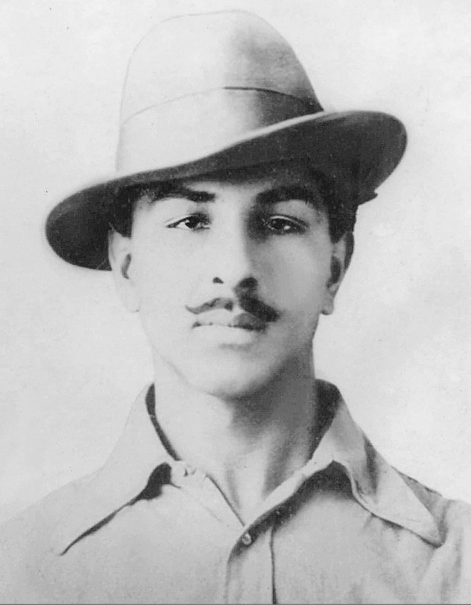

Shaheed bhagat singh
27 September 1907 – 23 March 1931
Early life
Bhagat Singh was born on 27 September 1907 in the village of Banga in the Lyallpur district of the Punjab in what was then British India and is today Pakistan; he was the second of seven children—four sons, and three daughters—born to Vidyavati and her husband Kishan Singh Sandhu. Bhagat Singh's father and his uncle Ajit Singh were active in progressive politics, taking part in the agitation around the Canal Colonization Bill in 1907, and later the Ghadar Movement of 1914–1915.
Revolutionary activities
- Formation of the Naujawan Bharat Sabha: Bhagat Singh founded the Naujawan Bharat Sabha in 1926, a youth organization that aimed to train young people in revolutionary ideology and methods.
- Bombing of the Central Legislative Assembly: On April 8, 1929, Bhagat Singh and his comrades threw two bombs in the Central Legislative Assembly in Delhi to protest against the Public Safety Bill and the Trade Disputes Bill. They were arrested and later executed for their actions.
- Publication of revolutionary literature: Bhagat Singh and his comrades published several revolutionary newspapers and pamphlets to spread their message and inspire others to join the freedom struggle.
- Hunger Strike: Bhagat Singh and his comrades went on a hunger strike in jail to protest against the harsh treatment of political prisoners and demand better living conditions.
Ideals and opinions
- Socialism: Bhagat Singh was a socialist and believed in the principles of equality and justice. He was influenced by the ideas of Karl Marx and believed that capitalism was the root cause of poverty and inequality.
- Nationalism: Bhagat Singh was a nationalist and believed in the idea of an independent India free from British colonial rule. He was committed to the cause of Indian independence and saw socialism as the means to achieve it.
- Secularism: Bhagat Singh was a strong advocate of secularism and believed in the principle of equal treatment for all religions. He believed that religion should not be used as a tool to divide people.
- Non-violence vs. Violence: While Bhagat Singh believed in non-violent methods of protest, he also believed that violence was sometimes necessary to achieve political goals. He believed that the use of violence could be justified in certain circumstances when peaceful methods failed.
- Education: Bhagat Singh believed that education was the key to empowerment and that it was important for young people to be educated about their rights and responsibilities. He established the Naujawan Bharat Sabha to train young people in revolutionary ideology and methods.